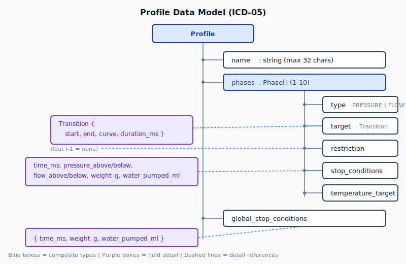
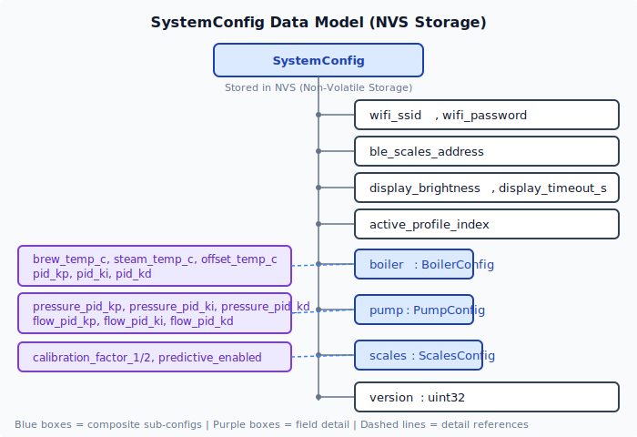
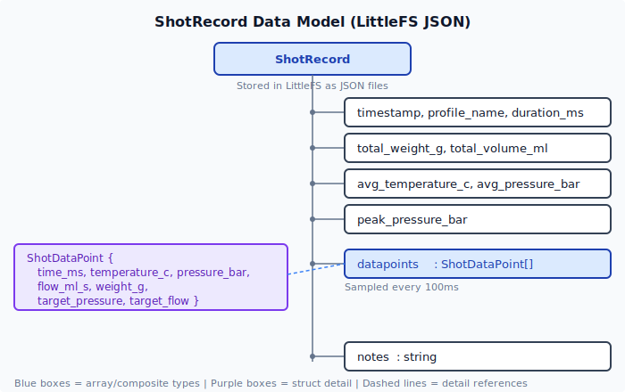

12. Future State: Data Model
Profile Data Model

Configuration (replaces eepromValues_t)

SystemConfig (stored in NVS)
├── wifi_ssid: string
├── wifi_password: string
├── ble_scales_address: string
├── display_brightness: uint8 (0-100)
├── display_timeout_s: uint16
├── active_profile_index: uint8
│
├── boiler: BoilerConfig
│ ├── brew_temp_c: float (default: 93.0)
│ ├── steam_temp_c: float (default: 155.0)
│ ├── offset_temp_c: float (default: 0.0)
│ ├── pid_kp: float
│ ├── pid_ki: float
│ └── pid_kd: float
│
├── pump: PumpConfig
│ ├── pressure_pid_kp: float
│ ├── pressure_pid_ki: float
│ ├── pressure_pid_kd: float
│ ├── flow_pid_kp: float
│ ├── flow_pid_ki: float
│ └── flow_pid_kd: float
│
├── scales: ScalesConfig
│ ├── calibration_factor_1: float
│ ├── calibration_factor_2: float
│ └── predictive_enabled: bool
│
└── version: uint32 (schema version for migration)Shot Log

ShotRecord (stored in LittleFS as JSON)
├── timestamp: uint32 (epoch seconds)
├── profile_name: string
├── duration_ms: uint32
├── total_weight_g: float
├── total_volume_ml: float
├── avg_temperature_c: float
├── avg_pressure_bar: float
├── peak_pressure_bar: float
├── datapoints: ShotDataPoint[] (sampled every 100ms)
│ ├── time_ms: uint32
│ ├── temperature_c: float
│ ├── pressure_bar: float
│ ├── flow_ml_s: float
│ ├── weight_g: float
│ ├── target_pressure: float
│ └── target_flow: float
└── notes: string (user annotation)